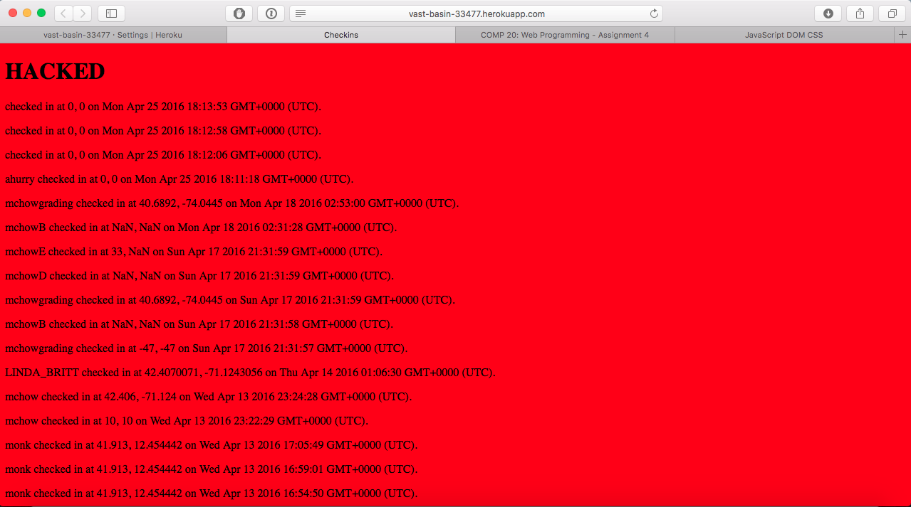
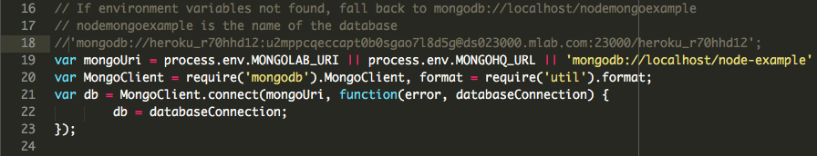

The following report was prepared by Aditya Hurry, as an assessment of Shreenath Bhanderi's assignment 2 and 3 for Comp20. The assignment was to build a web app that, after detecting a user's location, could show all the historic locations within a 1 mile radius of the user. The server side was implemented using a nodejs server with a MongoDB database. The front end was implemented using the google maps API, after requesting the data from the API exposed by the herokuapp instance.
The testing was carried out in two phases: (1) Black Box testing and (2) with access to the server side source code. The tools used were simple HTTP curl requests with 'bad' input, as well as malformed query strings using simple get requests. All parts of the API were tested using both tools.
Location:
Severity: *****
This is a biggie. The vulnerability to XSS throught the /sendLocation API can render the website unusable as it corrupts the database and can inject javascript into the front end of the website.
How was it found?
Sending the following as a curl request:
What happened when I did that?

How does one prevent that?
!!~~NEVER TRUST USER DATA~~!!
Sanitizing user data on the client side before it gets sent to the server would fix this problem. Special characters, including but not limited to <, >, ", $ should be removed before the request is sent.
Location:
Severity: ****
It allows access to all the checkins ever created on the app, thus entirely voiding user privacy. I gave this one less star, severity wise, than XSS because this was information that was already available through the /sendLocation API. Note: I know this doesn't technically qualify as a "SQL" injection because mongo databases aren't SQL databases. This kind of vulnerability smells like a SQL injection, which is why I named it as such - it unnecessarily exposes the database, which is what I understand a SQL Injection to be.
How was it found?
Executing the following GET request:
http://vast-basin-33477.herokuapp.com/checkins.json?login[$gt]=
What happened when I did that?
How does one prevent that?
!!~~NEVER TRUST USER DATA~~!!
Surprise, suprise (!!) - it's those pesky users again! Validating that the query sent with the GET request is just a string (in this case) and not stringified JSON would do the trick. The above GET request translates in mongolese to be the query db.find("login":{"$gt":}), which, because every record matches, returns all the records in the collection.
Location:

How does one prevent that?
Clean up your code before it's released into the production environment. While this information was only available to someone who has access to the source code, if this project were ever to be made open source, the entire database is then compromised, instead of access only being granted to it through the additional security layer of the [insert choice of server side framework].
The issues with the Landmarks server makes the entire app impossible to use - however, they're all easy fixes. There is the inherent flaw that all user data is exposed through the sendLocation API, however that can be fixed by restructuring the API so that only the submitting user's past information is returned with a request. The ability to get all the user data for the front end specification of showing everyone's location on the map could be another part of the API, with login names obfuscated or randomly assigned to protect users' identities.